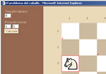

El problema del caballo |
|
| El problema del recorrido del caballo consiste en conseguir que esta figura complete un recorrido por todas las casillas del tablero sin repetir ninguna. En este enlace podreis ver un applet de Java que calcula y muestra la solución en tableros de diferentes tamaños y desde posiciones de inicio también distintas. |  |